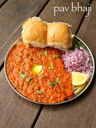

PAV BHAJI RECIPE

Description:
Pav bhaji, a vibrant dish born on the streets of Mumbai in the 1800s, serves up a delicious marriage between a rich, spiced vegetable curry ("bhaji") and soft, buttered bread rolls ("pav"). Originally created to fuel long-working mill workers, this vegetarian delight offers a complex interplay of flavors - savory, spicy, tangy tomatoes, and a hint of sweetness from the vegetables. The creamy texture of the bhaji, perfectly complemented by the soft chew of the pav, makes it a truly satisfying culinary experience.
Ingredients:
- Vegetables:
- Potatoes(boiled and mashed)
- Cauliflower(finely chopped)
- Onions
- Tomatoes
- Spices and Aromatics
- Pav Bhaji Masala
- Cumin Seeds
- Ginger
- Garlic
- Green chillies
- Red chilli powder
- Turmeric Powder
- Coriander powder
- Other Ingredients:
- Vegetable Oil
- Butter
- Water
- Salt to taste
- Lemon juice(optional)
- For Serving:
- Pav
- Chopped Coriander Leaves
- Chopped Onions
Steps:
- Prepare the Vegetables: Boil and mash the potatoes. You can also use a pressure cooker to speed up this process. Finely chop the cauliflower and any other vegetables you're using (carrots, peas, etc.).
- Make the Bhaji: Heat oil and butter in a pan. Add cumin seeds and let them sizzle. Saute chopped onions until translucent. Add ginger, garlic, and green chilies, fry for a few seconds until fragrant.
- Cook the Masala: Add chopped tomatoes (or puree) and cook until they soften and turn mushy. Stir in Pav Bhaji Masala, red chili powder (optional), turmeric powder, and coriander powder. Cook for a minute, allowing the spices to release their aroma.
- Incorporate Vegetables: Add the mashed potatoes, cauliflower, and other chopped vegetables. Mix well and cook for a few minutes.
- Adjust Consistency: Add water little by little to achieve the desired consistency for the bhaji. It shouldn't be too thick or too soupy. Season with salt to taste.
- Finishing Touches: Simmer for 5-7 minutes, allowing the flavors to meld. You can add a squeeze of lemon juice for a touch of tang. Garnish with chopped coriander leaves (optional).
- Toast the Pav: While the bhaji simmers, toast the pav in a pan with butter until golden brown.
- Serve: Serve hot pav bhaji with toasted pav. You can also add a dollop of butter on top of the bhaji for extra richness. Enjoy!